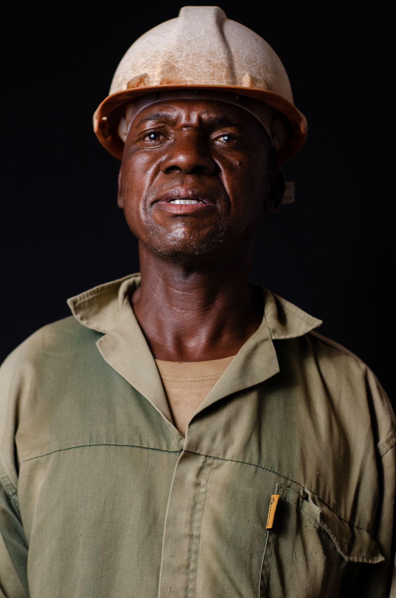
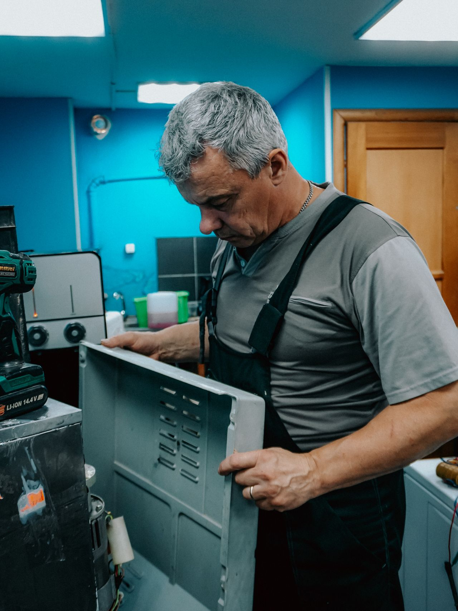
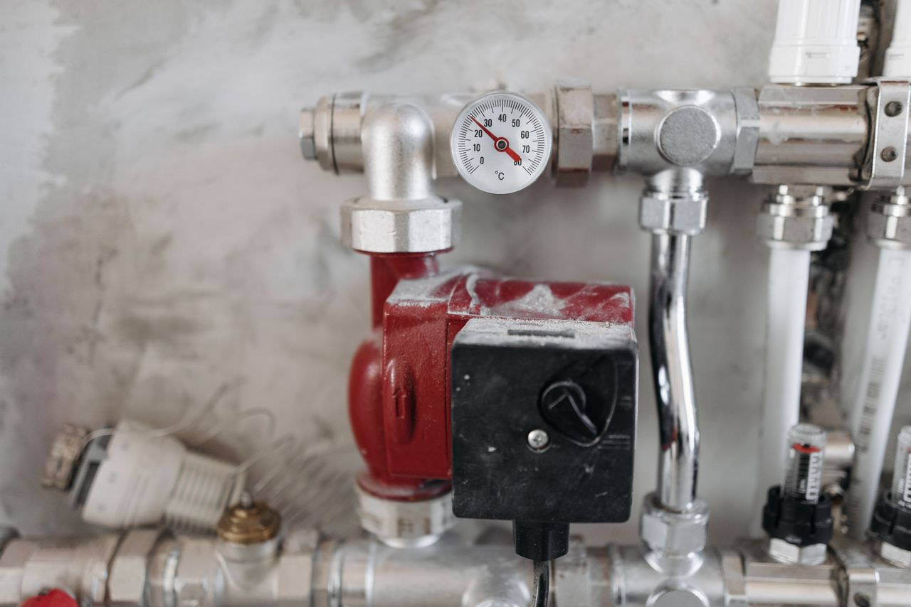

Emergencies & burst pipes
Burst pipes, geyser blowouts, mains leaks. One number, 24 hours, and a van that arrives with the fittings to close it.
Get service
Emergency repairs, geysers, drains and full bathroom installs across Cape Town's Southern Suburbs. The quote is fixed before work starts and the paperwork is done when it ends.
Waterline is a small team of registered plumbers working out of Diep River. No franchises, no subcontracted strangers: the plumber who quotes your job is the one who turns up and stands behind it.
Vans are stocked for a first-visit fix on the common failures: burst geysers, leaking valves, blocked drains, dead pressure. If a part has to be ordered, you get the price and the date in writing before we leave.

Emergencies first, then everything a house or complex needs to hold water where it should.
All six servicesBurst pipes, geyser blowouts, mains leaks. One number, 24 hours, and a van that arrives with the fittings to close it.
Get service
Repairs, replacements, solar and heat-pump conversions. Installed to SANS 10254 and handed over with a COC.
Get service
Full strip-outs to final fix. We run the wet works and coordinate the tiler, so you deal with one accountable team.
Get servicePlumbing is a grudge purchase until you find a plumber you trust.
The price you accept is the price you pay. If we find more once a wall is open, work stops until you approve the difference.

Every plumber on our books is PIRB-registered and covered by liability insurance. Your insurer gets the paperwork it asks for, first time.

Dust sheets down, site swept, pressure tested while you watch, and the COC in your inbox before the invoice.

A plumber answers, not a call centre. Send a photo of the problem if you can.
We find the cause, not the symptom, and you approve a fixed written quote.
SABS-approved fittings from a stocked van. Most jobs close on the first visit.
Pressure tested while you watch. COC and invoice land in your inbox together.
Based in Diep River, which puts every suburb below within a 20 minute run in normal traffic.
On the edge of the map? Phone anyway. If we cannot get to you fast, we say so straight.
Check your suburbEvery one of these people had our number from a neighbour before they had it from us.
Geyser burst at 05:40 on a Sunday. Plumber was here by 07:00, new geyser certified by lunch, and the quote never moved.
They re-piped our whole bathroom reno and kept the tiler on schedule. One WhatsApp group, zero surprises on the invoice.
Three other plumbers guessed at our low pressure. Waterline found the crushed pipe under the driveway in an hour with a camera.
Body corporate of 48 units. Their maintenance contract halved our emergency spend in the first year. Reports arrive monthly, unprompted.
Insurance geyser claim, and the assessor signed off Waterline's paperwork without a single query. That has never happened to us before.
Left the site cleaner than the painters did. Shoe covers in the house without being asked. Small things, but they are why we phone them first.

Not on weekdays between 07:00 and 17:00. After hours and on weekends a standard emergency rate applies, and we tell you the number on the phone before anyone gets in a van.
Our average across the Southern Suburbs is 90 minutes. If your suburb or the time of day makes that unrealistic, we say so on the call instead of letting you wait.
Yes. Every certifiable job, geysers above all, is signed off by a PIRB-registered plumber and the COC is emailed to you with the invoice. Insurers and conveyancers accept it as is.
If the tank itself has gone, replacement is the only honest answer. If it is a valve, thermostat or element, we repair it and tell you what remaining life to expect. You get both options priced in the same quote.
Weekly. We photograph the damage before touching anything, quote in the format assessors ask for, and supply the COC that closes the claim.
The Southern Suburbs and False Bay side: Claremont and Wynberg down to Fish Hoek. Outside that, phone anyway. If we cannot come, we usually know who can.
One call gets a registered plumber on the way with a stocked van and a fixed price.